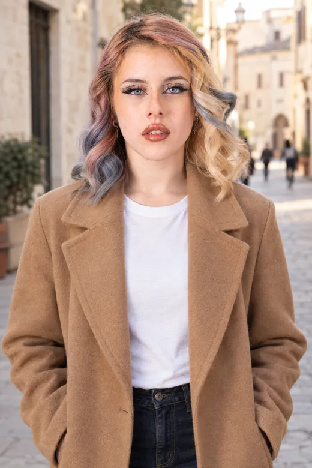

Dal reel dei 34 tipi di inquadratura: nel nostro Crea oggi ci sono inquadratura (primo piano, mezzo busto), pose e ottiche, ma manca dove sta la camera. Tre pezzi, tutti sullo stesso motore e sullo stesso controllo del volto.
Una pillola nuova accanto a Luce. Si apre su venti angoli divisi in tre famiglie; ogni carta e' una foto vera della stessa persona presa da quella camera, cosi' si capisce senza conoscere i nomi da set. Le foto qui sotto sono uscite dal nostro motore: Chiara, stesso cappotto, stessa via, cambia solo la camera. Tocca una carta e la frase non cambia: l'angolo va al motore come la luce. Sul telefono ogni famiglia scorre di lato.

Chiara + Aggiungi qualcunoin una via del centro storico nel tardo pomeriggio, cappotto color cammello, maglietta bianca
E' il reel fatto prodotto. Nella Serie per campagna si sceglie cosa cambia: la situazione (come oggi) o l'angolo. Con l'angolo, la scena resta una e si scelgono fino a sei angoli: esce un servizio fotografico vero, la stessa persona nello stesso momento vista da sei camere. Il primo scatto fa da guida come nella serie di oggi; prezzo in chiaro, i non tenuti non si pagano.
in una via del centro storico nel tardo pomeriggio, cappotto color cammello, maglietta bianca
Sei angoli tocca per togliere, + per aggiungere
Sei foto vere dal nostro motore: una scena, sei camere.
Chi scrive "ripresa dal basso" o "sopra la spalla di lui" non deve cercare la pillola: il direttore la accende con la scintilla, come fa gia' con luce e vestiti.
lui al tavolo di un ristorante, vista da sopra la spalla di lei che gli parla, luce calda di candele
Il reel funziona perche' e' sempre lo stesso ragazzo in 34 foto. Noi possiamo farlo meglio, con un volto vero del registro e il consenso: una pagina (e un reel nostro) con la stessa persona in venti angoli, ogni foto col suo certificato e la percentuale di somiglianza. E' la prova piu' chiara di quello che vendiamo. Costo stimato: venti scatti in qualita' alta dall'account interno.
La stessa persona, lo stesso giorno, venti angoli di ripresa. Ogni foto certificata, il volto misurato ogni volta.
Tutte foto vere dal nostro motore, account interno, ognuna col suo certificato.